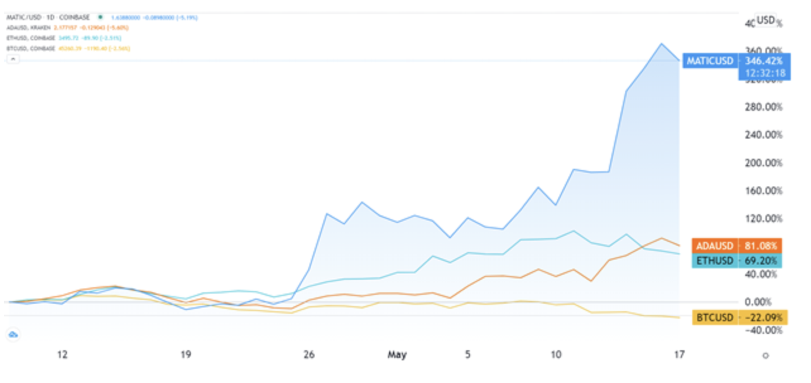
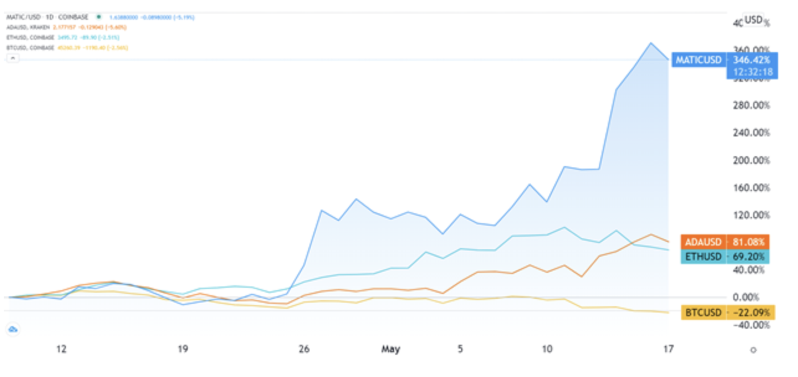

MILTON THOMAS

Test Lead Automation Engineer
March 2020 to Present:
Accenture Contractor for 2 Bank Clients, Pittsburgh, PA
Through my role as test lead automation engineer, I worked in a team of developers, business and product owners, while supervising test automation engineers to ensure production-ready application performance for general audience release. I co-developed Java software, while refactoring and conducting functional, regression, and performance testing to achieve optimal performance and reliability. I proactively problem-solved cross-team issues, such as automating API microservice testing and maintenance by authoring bash scripts. This includes Jenkins Pipeline automated test-driven builds.
May 2018 to April 2019:
Rural Sourcing - Albuquerque, NM
My team-based duties as software developer involved building out (from scratch) a GUI application from a CLI-only data-streaming application. My role was pivotal in communicating data and presentation goals—in collaboration with Product Owner and Business Analyst to achieve a unified Angular-RESTful microservice-based application using Hypermedia As The Engine of Application State architecture. Using a Jira storyboard, I typically completed 5-7 story tasks within a two-week sprint: UI/UX coding, debugging, unit testing, adding new features. Front-End Software Developer
July 2017 to Jan. 2018:
TMM (contracting for Xpansiv Data Systems) - Albuquerque, NM
My role within this start-up centered on Proof-of-Concept planning, design, iterative development and delivery of a React/Node.js-based UI/UX data-intensive app, styled with Material Design. Daily team-based workload involved client-side data logic and using creative problem-solving toward accomplishing a successful proof-of-concept. In addition, I provided JavaScript-D3js data visualization, which accentuated success of the product’s final delivery.
Skill Set
Full Stack Engineer
Education
- 12-week Full-Stack Bootcamp, 2020
Revature, Morgantown, WV - M.A. Sociology (Quantitative focus), 2015
University of New Mexico, Albuquerque, NM - B.A. History, 2001
University of New Mexico, Albuquerque, NM
Certification
2020 Linux Professional Institute Linux Essentials Exam #1104290836, Score: 730/800
2020 AWS SysOps Administrator, #MJ1C1FBJJ1F4QRG9, Score: 828/1000
2020 AWS Certified Solutions Architect Associate, #3VQN72H2HB14QW9D, Score: 861/1000
2019 AWS Amazon Web Services Developer Associate, #89ZEC9E1FFE1QTWR